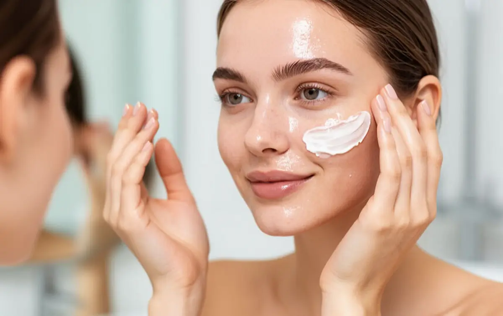
Проблемы кожи
Beauty blog & Expert care
Brow & Makeup
Проблемы кожи: причины, уход и эффективные решения
В этом разделе вы найдете практические руководства по самым частым проблемам кожи: причины, ошибки в уходе и ингредиенты, которые реально помогают восстановить баланс и здоровье кожи.
Посмотреть услугиНе уверены, какое средство выбрать?
Если сложно подобрать уходовую или декоративную косметику самостоятельно, вы можете получить персональную консультацию специалиста.
- ✔ Подбор ухода по типу кожи
- ✔ Подбор декоративной косметики
- ✔ Индивидуальные рекомендации
Косметика со спиртом
Когда алкоголь вреден, а когда допустим в составе.
Чувствительная кожа
Реактивность, покраснение, жжение и как с этим справиться.
Повреждённый кожный барьер
Сухость, стянутость и восстановление защитного слоя.
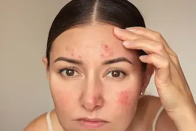
Раздражение и покраснение
Причины воспаления и как успокоить кожу.
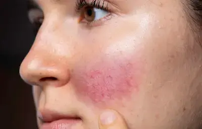
Розацея
Узнайте, как правильно ухаживать за реактивной кожей, чтобы эффективно снять покраснения и укрепить защитный барьер при розацеа.
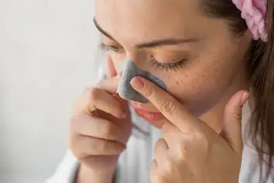
Черные точки
Разбираем проверенные способы глубокого очищения пор и предотвращения появления комедонов.
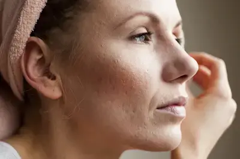
Обезвоженная кожа
Недостаток влаги vs сухая кожа — в чём разница.
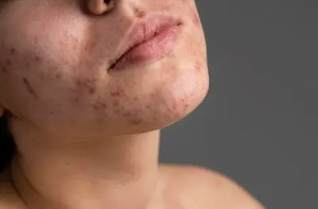
Акне
Причины, ошибки ухода и поддержка кожи.
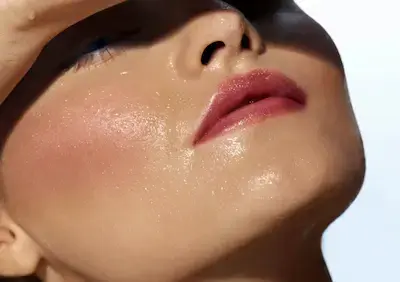
Жирная кожа
Жирная кожа — характеризуется повышенной выработкой себума, постоянным блеском, расширенными порами и склонностью к высыпаниям и воспалениям.
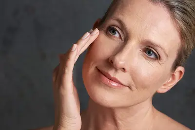
Первые признаки старения
Первые признаки старения — мелкие морщины, потеря эластичности и упругости кожи.
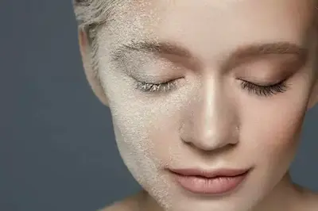
Тусклая кожа без сияния.
Тусклая кожа без сияния — уставший вид, замедленное обновление клеток и отсутствие здорового блеска.
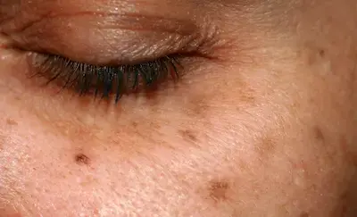
Пигментация и пятна
Пигментация и пятна — изменения тона кожи из-за солнца, воспалений или гормональных факторов.
Ощущение стянутости кожи
Ощущение стянутости кожи — частый признак обезвоживания или повреждённого кожного барьера.
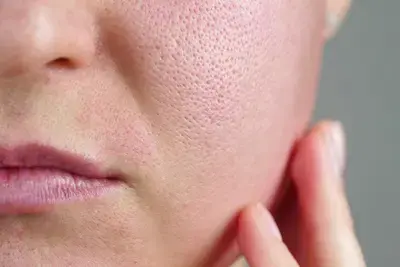
Расширенные поры
Расширенные поры — заметные поры, часто связанные с жирной кожей и снижением упругости.
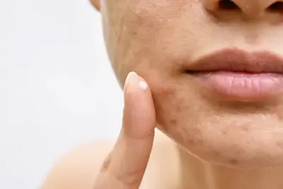
Неровная текстура кожи
Неровная текстура кожи — шероховатость, отсутствие гладкости и равномерности.
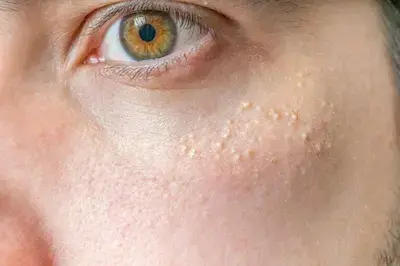
Закупоренные поры
Закупоренные поры — скопление себума и ороговевших клеток, приводящее к появлению чёрных точек и воспалений.
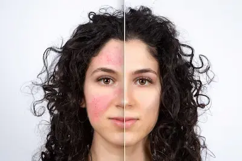
Раздражение после эксфолиации
Раздражение после эксфолиации — покраснение, жжение и чувствительность вследствие чрезмерного использования кислот и пилингов.
Сухая кожа
Сухая кожа — дефицит липидов, шелушение, ощущение сухости и стянутости.
Избыточная выработка себума
Избыточная выработка себума — повышенная жирность кожи, блеск, расширенные поры и склонность к высыпаниям.
Реактивная кожа
Реактивная кожа — быстро реагирует на внешние факторы и агрессивные ингредиенты покраснением, жжением и дискомфортом.
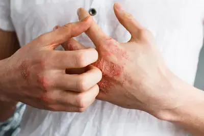
Кожа, склонная к экземе
Кожа, склонная к экземе — хрупкая кожа с воспалениями, зудом и выраженной сухостью, требующая восстановления кожного барьера.
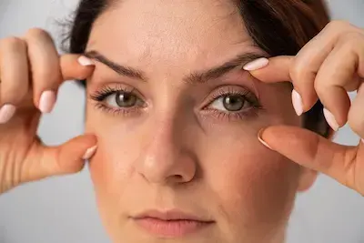
Потеря упругости
Потеря упругости кожи лица связана со снижением коллагена и эластина. Почему кожа становится дряблой и как восстановить плотность — в материале.
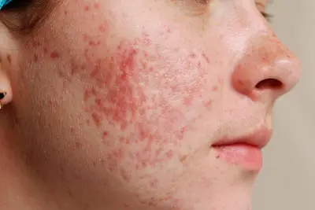
Постакне
Пост-акне — это пятна и рубцы после прыщей и воспалений. Какие средства помогают убрать следы акне — подробно объясняем.
Гиперпигментация
Гиперпигментация кожи проявляется тёмными пятнами после солнца, акне или гормональных изменений. Разбираем причины и способы осветления кожи.
ПАВ и раздражение кожи
Агрессивные ПАВы могут разрушать липидный барьер кожи, усиливая потерю влаги и повышая чувствительность, что приводит к сухости, раздражению и зуду.
Комбинированная кожа
Комбинированная кожа — состояние, при котором Т-зона (лоб, нос, подбородок) склонна к жирности, а щеки остаются сухими. Важно подобрать уход, который малтирует жирные участки, не пересушивая при этом остальное лицо.
Солнечные ожоги
Солнечный ожог кожи — результат избыточного воздействия UV-лучей. Покраснение, воспаление и повреждение кожного барьера требуют правильного ухода.
Фотостарение
Фотоcтарение кожи лица возникает из-за воздействия солнца и ультрафиолета (UV). Появляются морщины, пигментные пятна и потеря упругости кожи.
Часто задаваемые вопросы о проблемах кожи
Можно ли решать несколько проблем кожи одновременно?
Да, но важно не перегружать уход и правильно сочетать активные ингредиенты, особенно при чувствительной коже.
Почему кожа становится чувствительной?
Чаще всего из-за нарушения кожного барьера, агрессивного ухода или чрезмерного использования активов.
Можно ли восстановить кожный барьер?
Да. С помощью липидов, церамидов, увлажнения и отказа от раздражающих компонентов.